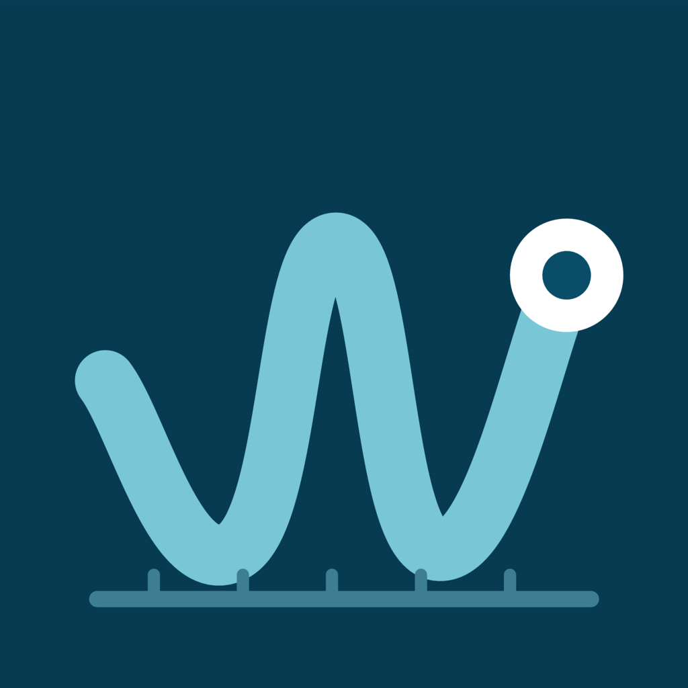

Windward
A barometer on your wrist.
A standalone Apple Watch appPressure from your Watch sensor, with history and trend. Weather, tides and solar events complement the barometer. Free, with no ads, subscriptions or in-app purchases.

WindwardA barometer on your wrist.
A standalone Apple Watch appPressure from your Watch sensor, with history and trend. Weather, tides and solar events complement the barometer. Free, with no ads, subscriptions or in-app purchases.